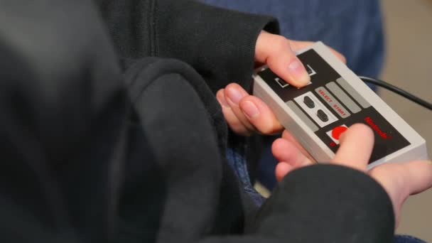

From NES to PlayStation, retro gaming is booming. But will it last?
Joshua Fruhlinger

When you look at the world around you and consider what’s popular — the top movies, music, clothing, and products — you get the feeling that everything cool today is something we’ve seen before.
As of September 30, 2018, combined sales of the NES and SNES Classic editions have exceeded 10 million units.
That’s no drop in the bucket — It approaches the roughly 14 million units the Wii U sold in its entire lifetime. Once a limited edition product, the NES Classic is now a major money maker for Nintendo. Every time the NES Classic becomes available again at the retailer Best Buy, which now lists “Retro Gaming” as a major product category, it shoots right to the top of its sales-rank charts.
And if you think other video game companies aren’t taking notice, you’re silly.
On December 3, Sony will unleash the PlayStation Classic, a miniaturized version of the iconic gray box that turned the video game industry on its head in the 1990s. It will be pre-loaded with 20 games, including favorites like Final Fantasy VII and Tekken 3
So is the retro craze real? Can Sony cash in on the market that Nintendo seemingly uncovered last year? The answer, in short, is yes. If early numbers are any indication (and they usually are), the PlayStation Classic is going to be a holiday winner for Sony.
When the PlayStation Classic became available for pre-order at GameStop for $99, it outsold every other product that was available in the month of September. That’s right. It beat out Super Smash Brothers, GameStop gift cards, and even Pokémon.
A retro gaming goldrush is on. The Atari 2600, the 1970s console that legitimized TV video gaming, has been released by different manufacturers since 2011 as the Atari Flashback. It sold a reported 860,000 units in the United States, and continues to be marketed in various iterations. Retro Games just launched a $79 mini version of 1982’s Commodore 64 called THEC64. It’ll be loaded with 64 games (get it?) including Boulder Dash and Jumpman. It even features a half-size but non-functional brown keyboard. And guess what? It’s sold out. So what’s happening here? Who’s buying these things? Is retro video gaming here to stay?
Let’s start with the buyers. Remember that in the 80s, playing video games at home wasn’t terribly cool. It was associated with nerdy propellerheads who stayed at home, glued to their 19-inch TVs looking for the next high score. The “cool” version of playing video games at the time took place in the arcades.
Some of the most iconic 1980s movies, from The Karate Kid to Tron, included major scenes in video game arcades. But one thing was clear: Gaming was only cool if it was done in public, on a date, and while wearing a rad satin jacket.
Today, the audience is much wider.
People who played these games back in the day are looking for a nostalgic kick. The simplicity of the games contrasts with the complexity of modern titles. There’s something refreshing about a simple 8-bit romp. They’re buying.
Then there are the “cool kids” who were so busy being “normal” humans at the time that they missed the train the first time it arrived. They’ve had a chance to try Tekken 3, and this time they’re not going to miss the trend. They’re buying.
And there are kids. When it comes to video games, there are always kids, and this time they’ve all been raised on retro-styled games on their parent’s mobile devices. They’ve also heard their parents talk about the hours they spent playing Jumpman. Between kids’ interest and parental nostalgia, they’re buying.
Will it last? It’s likely. The nostalgia well never empties. Just as Nintendo has moved on from the NES Classic to the SNES Classic, manufacturers will look to anniversaries of their products past and, when the timing is right, re-release them to adoring fans. In fact, rumors are already swirling that Nintendo will release a classic N64.
The company says it has no plans to do so, but who are they kidding? When the numbers are right, you’d better bet that we’ll be buying.